FWW_サイト研究会(仮)
ナビゲーション
福岡で一番緩い勉強会、通称「サト研」にようこそ。
お知らせ
レポート
レポートvol.48
レポートvol.47
レポートvol.46
レポートvol.45
レポートvol.44
レポートvol.43
レポートvol.41
レポートvol.40
レポートvol.39
レポートvol.38
レポートvol.37
レポートvol.36
レポートvol.35
レポートvol.34
レポートvol.33
レポートvol.32
レポートvol.31
レポートvol.30
レポートvol.29
レポートvol.28
レポートvol.27
レポートvol.26
レポートVol.25
レポートvol.24(サトキャンプ）
レポートvol.23
レポートvol.22
レポートvol.21
レポートvol.20
レポートvol.19
レポートvol.18
レポートvol.17
レポートvol.16
レポートvol.15
レポートvol.14
レポートvol.13
レポートvol.12
レポートvol.11
レポートvol.10
レポートvol.9
レポートvol.8
レポートvol.7
レポートvol.6
レポートvol.5
レポートvol.4
レポートvol.3
レポートvol.2
レポートvol.1
レポート >
レポートvol.7
▼vo.7 風景
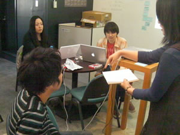 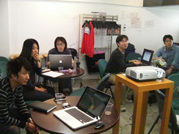 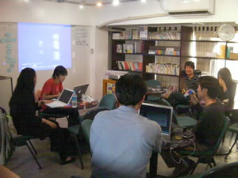
概要
日時：2009/05/24(日) 14:00‾18:00
場所：AIPcafe
参加人数：11人
大まかな流れ
14:00〜 話したい人／ディスカッション内容決め、自己紹介、ライトニングトーク(自慢大会)
18:00〜 懇親会
ざっくりした内容
自己紹介
全員自己紹介
初めての人
id:agatanaさん
miyoshiさん
@kun_moritaさん
tetsujin@呼子さん
運営サイトは「呼子」でググると1位
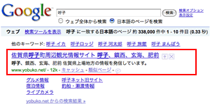
GW中のPVは凄かった
呼子でネットワーク管理しながら、住み込みでのんびり働く後継者を絶賛募集中
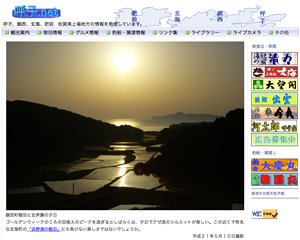
むらじゅんさん
鐵尾さん
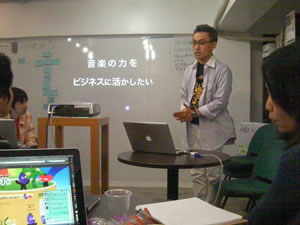
PodCast :くりらじ
http://itunes.apple.com/WebObjects/MZStore.woa/wa/viewPodcast?id=78743478
iTuneでもランキングはいつも上位に
他チャンネルでいろいろ展開中
Mp3データの高音質にするとサーバー負荷がかかる
クラウドがいいよね
有料化して何％視聴者が残るか（支払うか）
声のお仕事募集中〜
Wordpressの
cforms
ってプラグインはイケてない
@taikikenさん
inazuma.tv
バイト文字環境では文字化けがひどい
ブログタイトルがローマ字じゃないといけない
ハードコーディングがひどい
他言語化してるのに。。。
バージョンアップが早すぎる
mail関数使っちゃってる
やっぱり
contact form7
だよね！
ドネートは制作者として当然
ドローツールについて
id:agatanaさん
tenjin.web
何を使ってるかみなさんの意見を聞きたい
ワイヤーフレームは書いてる？
イラレで書く
共通部分(ヘッダーとか)はレイヤー機能が楽ちん
書き出し（印刷）がレイヤー切替するのが面倒
Fireworksでもいいかもしれない
Adobeがそういう方向で行こうとしている
カンプはページ機能が便利
リーハンド（手書き）で書く
エクセルで碁盤上に、、、
自分１人だったら書かない
サイトマップとかは？
マインドマップで書いてる
XMind
とか操作性はいい
やいぶさんが前にブログで書いてた
エクセルで表で書く
VISIOで。みんな使ってるので。
みんなで同時に書き込めたい
NOTAってサービス
のもいいらしい
PhotoshopとFireworksは どっちがサイト制作に向いてる？
@kun_morita
さん
DTP上がりなのでどっちをどういう時に使えばいいか迷う
Fireworksが便利なところ
ページ単位で作るとき
ピクセル単位の調整
パーツをシンボル化できる
今までのサト研でも何度も出てきた不変の話題
要は使い分け
OpenIDでメールでもできる件
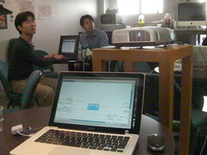 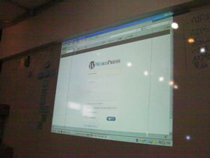
miyoshiさん
WordBench 福岡グループの運営者
Wordpress のプラグイン：
contact form7
の作者
OpenIDは今年来る！
でも今年もう半分終わってる...
Wordpressの
OpenIDプラグインがあるよ
ログイン画面でも使えるよ
GoogleもGmailアカウントでOpenID出した
GmailでもWp管理画面にログインできちゃう
どんなメールアドレスもOpenIDのURLに変換するサービス
vidoop
ってどうも開発／更新が止まってるらしい、、、
どっかやれば大きなサービスになるんじゃないかな
フリーランスになったよ
本気でWordpress頑張るよ
新しいプラグインも構想中
Windows Server IIS7を立ち上げたよ
香山さん
「Microsoft スキル チャージ プログラム ‐ 第 3 弾」
でサーバーもらったよ
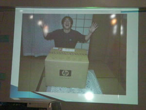
GWは仕事で休みなしだけど頑張ってサーバー立てたよ
http://skill.hakata.us/ でサーバー立てたよ
ドメインはお名前.comで
なぜか
usドメインが¥30/年のキャンペーン
10個とっちゃった
別で二台目も当てちゃった
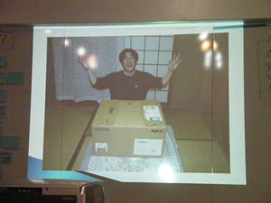
インストールは楽勝だったよ
固定IPも持ってたから楽勝
ダイナミックDNSってどうしてる？
FreeDNSってところで
IP6は対応してたけど結局IP4で
サーバー構築と、運営保守は別スキル
昔、痛い目にあった事が、、、
中国、ソ連とかからアタックが激しい
IPテーブルで国別にアクセス制限
クラウドがいいよね
昔のクラウドは高かった
Amazonとか大分お手頃になった
ブロブパーツ制作秘話
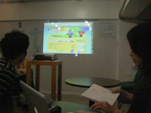
@mutsuking
GWに自宅合宿で制作
ニコニコ動画デビュー
手書きイラストやカンプスケッチを公開
ブログパーツの裏側
@我流
Twitter APIを利用
10分間100回のアクセス制限
芸能人ブログに貼られてあっという間に超過
キャッシュファイルでしのぐ対策
PHPで通信
郵便番号APIも使ってる
Flashはタイムライン+AS派
開発規模に寄る
後々使い回ししづらい
アクセス解析みせちゃうよ
貼ってくれたブログパーツのPVがわかっちゃうよ
実はこっそり、
配布ページの一番下にPVの数字
出してるよ
ブラウザ等の割合が複数のサイトをまたがって統計でるよ
懇親会
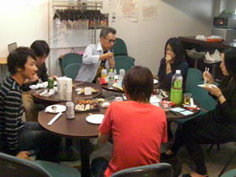 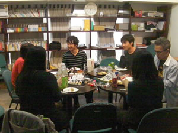
サービスの話
最初は「それ、○○でできるじゃん」って意見との戦い
できるんだけど、誰も作らない。
何年も続けてみて、後ろを振り返ると誰もやってなかった
作ったものに後から意見言うのは簡単
「短距離」と「マラソン」の両方が時と場合で必要
立ち上げる人と運営する人がバランス良くいるとうまくいく
雑談
科学やロボットのライブPodCastイベント
誰か興味ある人、出てくれる人知らない？
警固公園で落語のイベント
AIPcafeのギャラリー
でやれるかな？
自分の方向性
世の中凄い奴はいっぱいいる
いつも凹みながら天狗になりながら模索
懇親会のBGM選曲は鐵尾さん。教えてくれた
soma fm
ってサイトのMP3がBGMにとても良かった。
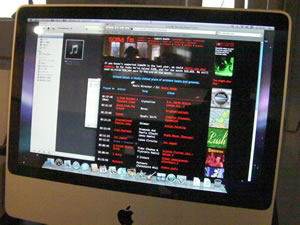
次回予定
意外とAIPcafeが人気で来月は難しい？
たまには平日夜とかやってみようか
例えば金曜日19時から
こっちの方が来れる人もいるかもしれない
ライトニングトーク大会1人5分(絶対厳守)
人ぐらい集まれば面白いんじゃない？
最初からお酒解禁で